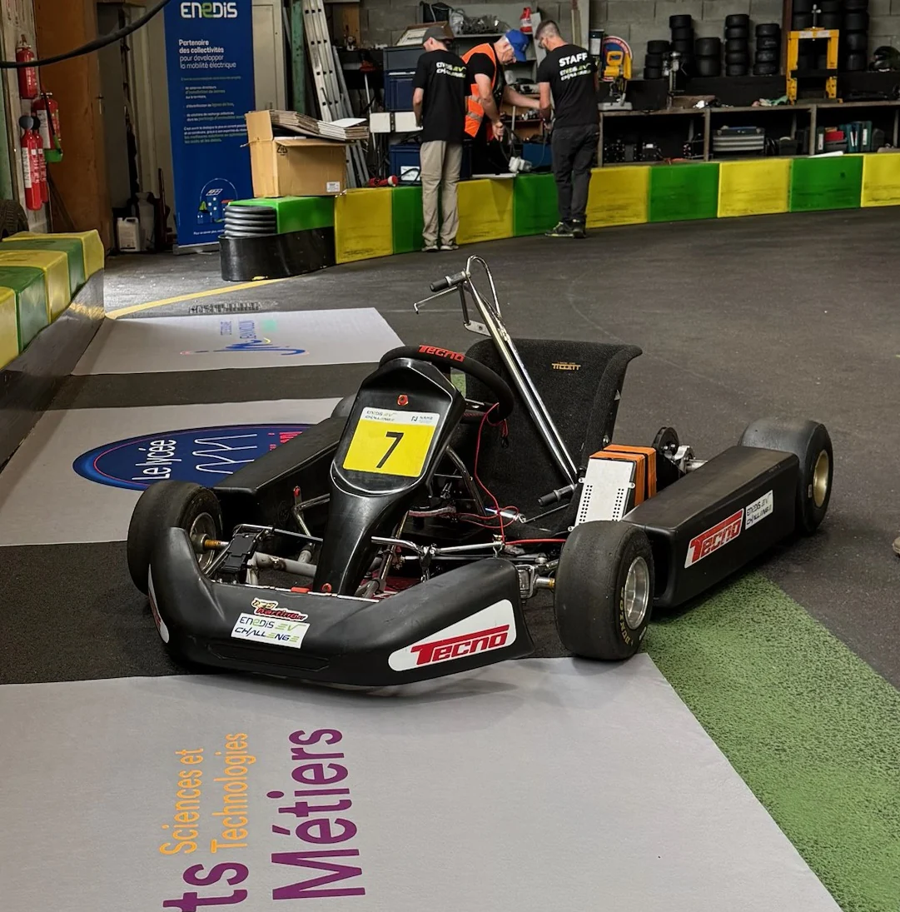
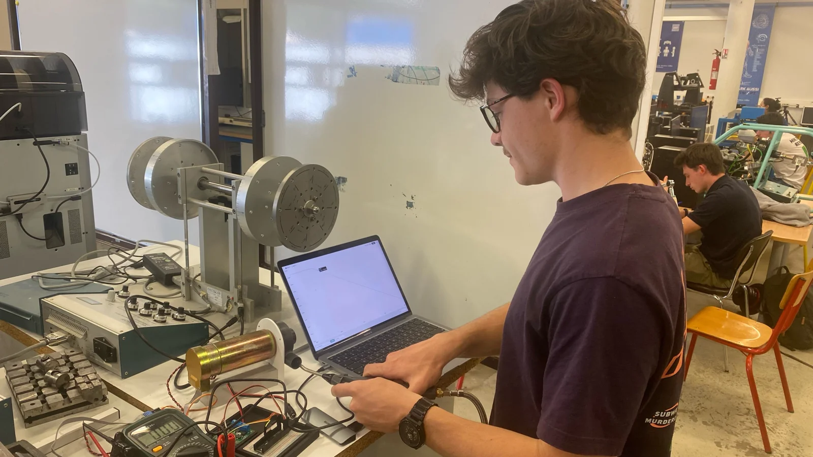
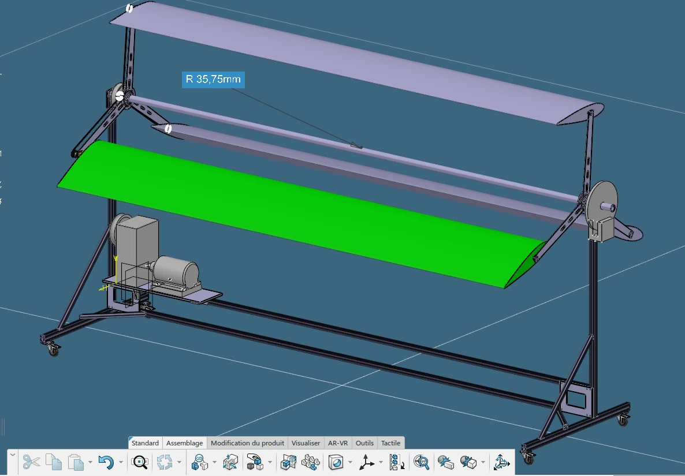
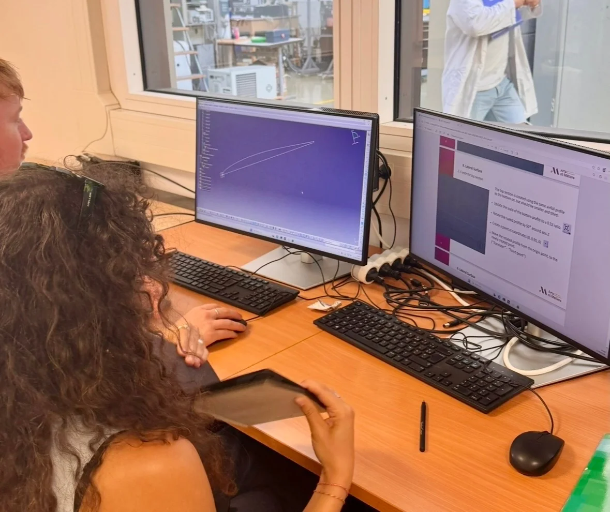
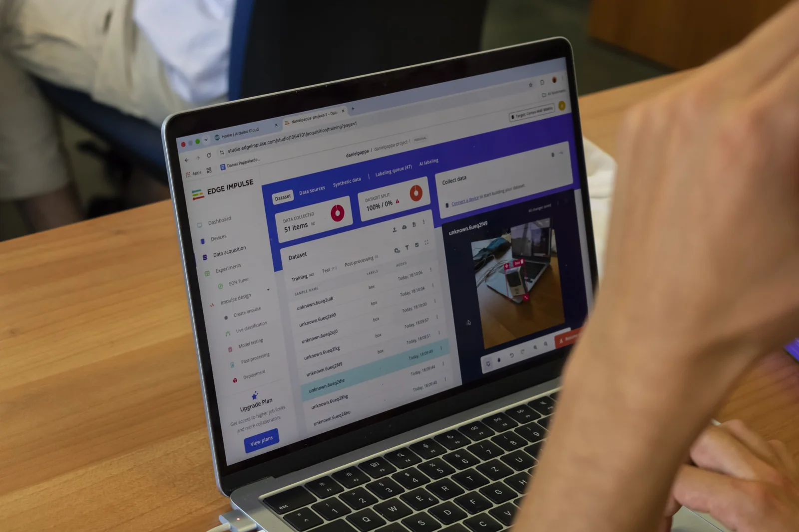

Engineering Projects
Engineering.
In practice.
From an experimental test bench to an electric kart. A selection of academic projects and international courses, with the decisions, methods and lessons behind them.

Experimental mechanics2022–2024
MGU-H energy recovery
A turbine, a generator, and the search for the right load.


International course · Organisation2025–2026
Surfboard eco-design
Bringing European students together around surfboard design.

International course · ParticipationOne-week course
Autonomous systems in Messina
Connecting sensors, code and a live camera feed.